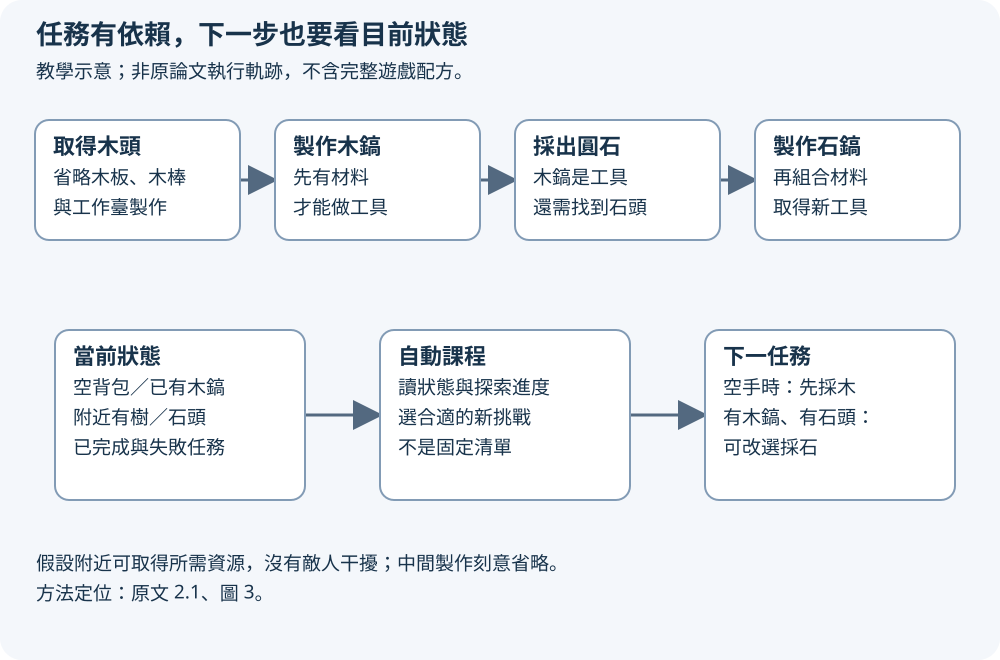
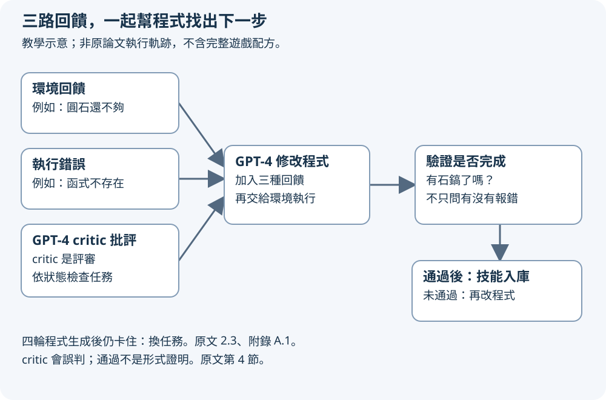
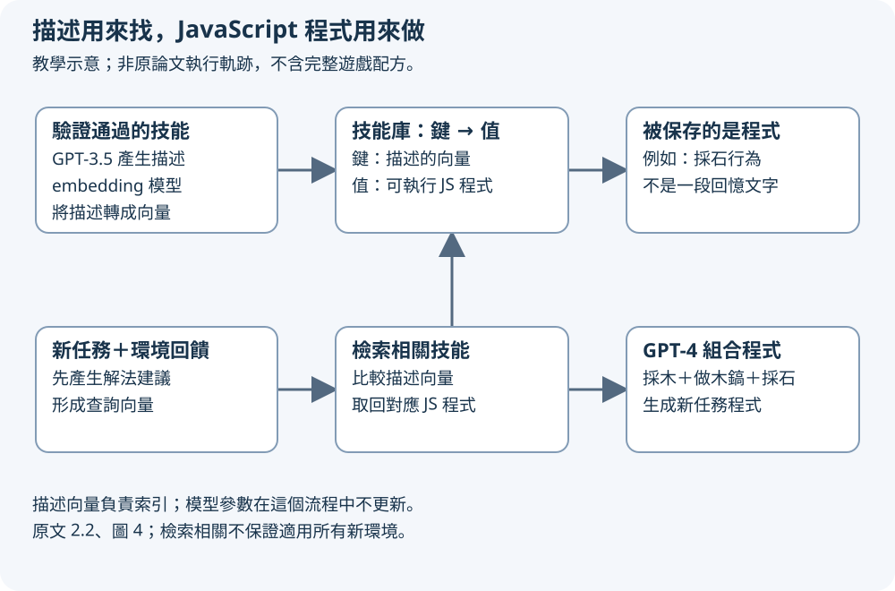

這是教學比喻：學做菜時，你會先練切菜，再把熟練步驟用進新食譜。Voyager 在 Minecraft 裡也嘗試這件事：自己挑下一個挑戰、試著執行、根據失敗修改，並把成功做法保存成下次可呼叫的程式。
先把大目標拆成能做的小事
想像你第一次玩 Minecraft，想做一把石鎬，背包卻是空的。這裡用「木頭→木鎬→採石→石鎬」作自編教學例，不是論文實驗軌跡；為了看懂依賴，省略木板、木棒、工作臺等中間製作，也假設附近有樹與可採的石頭，沒有敵人干擾。
先取得木頭，才能準備木製工具；有了木鎬，才能採出製作石鎬所需的圓石。這些步驟互相依賴。若一開始只說「做石鎬」，系統可能反覆嘗試一個缺材料的任務，卻沒有向前走。
Voyager 的自動課程就是幫自己選下一個合適任務的機制。課程讀取目前背包、附近資源，以及已完成與失敗任務。背包空時先採木；已有木鎬而附近有石頭時，再選採石。這是一種隨狀態調整的選題方式，不是一張必須照順序跑完的固定清單。原文定位：2.1、圖 3。
下一步要看背包與環境

放大閱讀圖解 ↗ · 窄螢幕可在圖內左右滑動。

圖解文字說明
- 依賴路徑
取得木頭→製作木鎬→採出圓石→製作石鎬。這是簡化教學鏈，省略木板、木棒、工作臺等中間製作，假設附近有所需資源且無敵人干擾。
- 動態選下一任務
目前背包、附近資源與已完成／失敗任務→自動課程→下一任務。空手時先採木；已有木鎬且附近有石頭時可選採石。課程隨當前狀態選題，不是固定清單。
它怎麼動手？先把任務寫成程式
Voyager 讓 GPT-4 產生 JavaScript 程式，再交給 Mineflayer 執行。Mineflayer 是控制 Minecraft 角色的程式介面；API 就是程式可以呼叫的操作。模型收到背包、附近方塊、血量等文字狀態，不是直接看螢幕像素按滑鼠。原文定位：2.2、3.1–3.2。
在教學例中，「採石」程式可以先檢查背包有沒有木鎬，再找石頭、移動、裝備工具與挖掘。把一串動作包成程式，之後就能重用，不必每次從一句句行動重新開始。這些步驟是示意，不是可直接執行的遊戲程式。
這裡的學習不更新 GPT-4 權重，也就是模型內部參數。變的是提示裡的狀態、回饋，以及外部保存的技能程式；模型本身仍透過黑箱 API 被呼叫。原文定位：1、2。
三種回饋，分別抓住三種失敗
同樣是石鎬沒做成，原因可能不同。環境回饋告訴你進度，例如圓石不足；執行錯誤告訴你程式哪裡不能跑，例如呼叫不存在的函式；自我驗證則問任務到底完成沒有。這三路資訊要放回提示，讓 GPT-4 修改上一輪程式。原文定位：2.3、圖 5–6。
自我驗證由另一個 GPT-4 角色擔任 critic，也就是評審。它依任務與目前狀態判斷成功，失敗時提出批評。程式沒有報錯，不等於石鎬已在背包裡；因此成功檢查與程式除錯必須分開。
只有通過這個驗證流程的新技能才加入技能庫。不過 critic 仍可能誤判，這不是形式證明。原文規定若四輪程式生成後仍卡住，就向課程要另一個任務；不會無限重試同一件事。原文定位：2.3、4。
三路回饋導向修碼與驗證

放大閱讀圖解 ↗ · 窄螢幕可在圖內左右滑動。

圖解文字說明
- 三路回饋進入修碼
環境回饋說明進度與材料缺口；執行錯誤指出不存在函式等程式問題；另一個 GPT-4 critic 依任務與狀態提出成功判斷與批評。三者放回提示，讓 GPT-4 修改程式，再交環境執行。
- 檢查成功與控制重試
再執行後，critic 檢查任務是否完成，而非只看有無報錯。通過才把技能加入庫；未通過則再修改，四輪程式生成後仍卡住便換任務。critic 可能誤判，通過不是形式證明。
技能庫保存的是會做事的程式
技能庫可想成工具箱，但裡面不是「我以前採過石頭」這種回憶文字，而是採石等行為的可執行 JavaScript 程式。描述負責讓系統找到工具，程式負責實際執行。原文定位：2.2、圖 4。
embedding 是把文字轉成可比較的數字向量。Voyager 以技能描述的 embedding 當檢索鍵，連到相應程式；新任務的解法建議與環境回饋形成查詢，找回相關技能，放進 GPT-4 的提示。描述由 GPT-3.5 產生，描述的向量則由 embedding 模型產生。
做石鎬時，系統可以取回採木、製作木鎬、採石等技能，讓 GPT-4 組成新程式。這裡「可以」描述設計用途，不保證每次檢索都正確，也不保證舊程式在所有地形都能成功。
描述找工具，程式來執行

放大閱讀圖解 ↗ · 窄螢幕可在圖內左右滑動。

圖解文字說明
- 保存描述索引與程式
驗證通過的技能→GPT-3.5 產生描述→embedding 模型把描述轉成向量。技能庫以描述向量為鍵，以可執行 JavaScript 程式為值；保存的技能不是一段回憶文字。
- 查詢、取回、組合
新任務的解法建議與環境回饋→查詢向量→比對描述向量→取回對應 JS 程式→GPT-4 組合成新任務程式。流程不更新模型參數；檢索相關不保證適用所有新環境。
30秒自測（自編教學例）
自編教學例：目標是做出石鎬。採石程式沒有報錯，但背包裡沒有任務要求的石鎬，能把它當成完成任務的新技能入庫嗎？若 critic 說完成，是否就永久保證這個技能正確？
看答案與理由
不能只看程式沒報錯，還要按任務與目前狀態檢查成功條件。原方法中 critic 判定通過才加入技能庫，但 critic 仍可能誤判；一次通過，也不保證程式在所有未來地形都正確。
這個結果能帶走什麼，不能推出什麼？
值得帶走的是系統設計：選一件目前做得到的新事，執行取得回饋，修改並驗證，再把成功做法保存為可重用程式。新任務因此能從舊能力起步。它不是把所有記憶塞進同一個提示，也不是每次都重新訓練模型。
原文第 4 節指出，課程可能提出遊戲中不存在的物品，程式可能使用不存在的 API，critic 也可能判錯。所謂驗證通過，只代表這個模型式評審在當時狀態下接受它，不代表對所有未來情境都正確。
論文稱技能庫 ever-growing，意指持續加入技能；文中並沒有提供容量上限或淘汰機制。這是讀者檢查方法後應保留的邊界，不能把它解讀成已解決長期儲存、去重與過時技能管理。
這是 Minecraft 中依賴文字狀態與控制 API 的研究，不是已完成的通用機器人。換成真實環境，感知、控制誤差與物理條件都需要另外處理；遊戲內的遷移結果不能直接推出實體能力。
深入方法：課程、檢索與重試的接縫
2.1 的課程綜合當前狀態、已完成／失敗任務，以及 GPT-3.5 自問自答補充的語境，交給 GPT-4 提出下一任務。這能解釋它為什麼有機會選擇符合資源條件的挑戰；但合理性仍依賴模型與提供的狀態。
2.2 與圖 4 記載檢索最相關的前 5 個技能。程式生成提示還包含控制 API、上一輪程式、環境回饋、執行錯誤與 critic 的批評。檢索並非直接選一個固定動作，而是提供可重用程式給下一輪生成。
2.3 與附錄 A.1 記載最多四輪程式生成。成功則記錄完成並加入技能，失敗則記錄失敗、換下一任務。這裡的回圈邊界很重要：反覆修正是受限流程，不是模型保證終能自我修好。
數字要連同實驗條件一起讀
原文 3.3、圖 1：在 160 次提示迭代內發現 63 種獨特物品，約為對照方法的 3.3 倍。原文表 1：解鎖木器級所需提示迭代數最高改善 15.3 倍。這些是指定環境與對照下的指標，不是所有任務速度都快 15.3 倍。
3.2 說明作者把 ReAct、Reflexion、AutoGPT 重新實作到同一設定；並未直接與讀取像素、輸出低階控制的方法比較。3.1 使用當時的 GPT-4、GPT-3.5 與 embedding API。數字應讀作該實驗的研究證據，不是今日模型排名或價格保證。
3.3 的新世界實驗保留已學技能庫、清空背包並重置世界，再測未見任務。因此「從零開始」指新世界的資源狀態，不是抹除技能庫，也不是模型完全沒有 Minecraft 知識。
看圖讀原文：先看系統，接著查失敗
先看圖 2，把自動課程、技能庫、迭代提示三部分接起來；再看圖 3，問下一個任務究竟讀了哪些狀態。這一步能防止把自動課程誤認成固定任務清單。
接著看圖 4，分清描述向量與可執行程式；再看圖 5–6，分清環境回饋、程式錯誤與成功判定。最後讀第 4 節，核對哪些錯誤仍未被解決。
要追實驗，讀 3.1–3.4，特別是表 1、表 2 的比較條件。要自己做一個小型原型，先讀附錄 A.1 的流程與 A.4–A.5 的提示，不必先重現整個 Minecraft 環境。
原文與來源
此頁依下列固定快照編寫；教學例子與程式片段用來解釋方法，請回到原文確認研究設定與結果。
- arXiv 原始論文 2305.16291 ↗（公開）
- 原庫專屬導讀／閱讀筆記 ↗（私有庫，需要 GitHub 存取權；快照 f60363c）
- 原論文 v2：方法與圖 2–6 ↗
- 原論文 v2：實驗條件、結果與消融 ↗
- 原論文 v2：限制 ↗
- arXiv 論文與版本紀錄 ↗